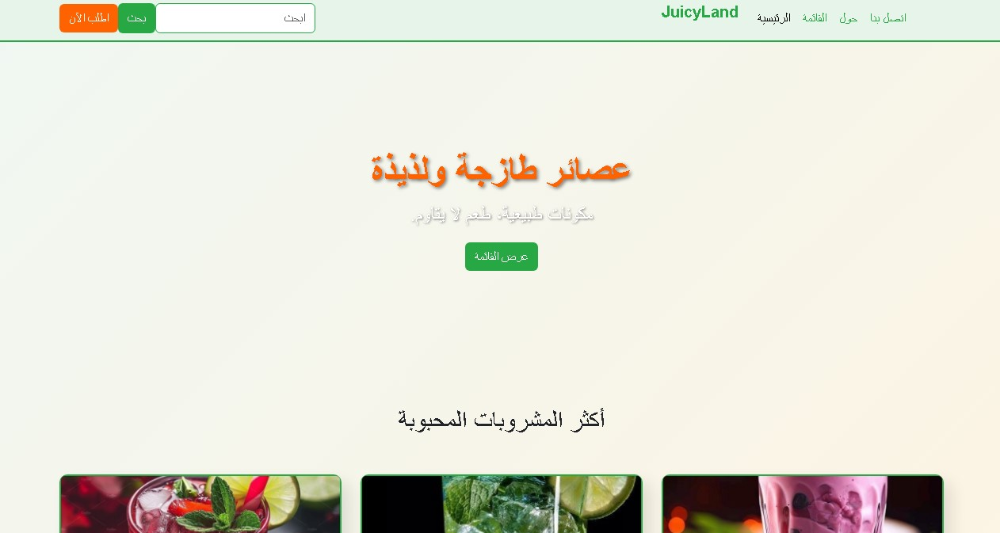

جوسي لاند (نموذج موقع عصائر)

"جوسي لاند" هو نموذج لموقع ويب مصمم خصيصًا لمحل عصائر، يعرض المنتجات بطريقة جذابة وعصرية. يهدف هذا المشروع إلى توفير تجربة مستخدم سلسة وممتعة، مع التركيز على التصميم الجمالي والمتجاوب الذي يبرز نضارة وجودة العصائر.
المميزات الرئيسية
- تصميم عصري وجذاب يعكس طبيعة المنتجات الطازجة.
- واجهة مستخدم متجاوبة بالكامل، تضمن عرضًا مثاليًا على جميع الأجهزة.
- عرض المنتجات بطريقة منظمة مع صور عالية الجودة.
- سهولة التصفح والوصول إلى معلومات المنتجات.
التقنيات المستخدمة
- HTML5: لبناء هيكل الموقع.
- CSS3: لتصميم الواجهة الجمالية وتأثيرات الألوان.
- Bootstrap 5: لضمان التجاوب الكامل وسرعة التطوير.